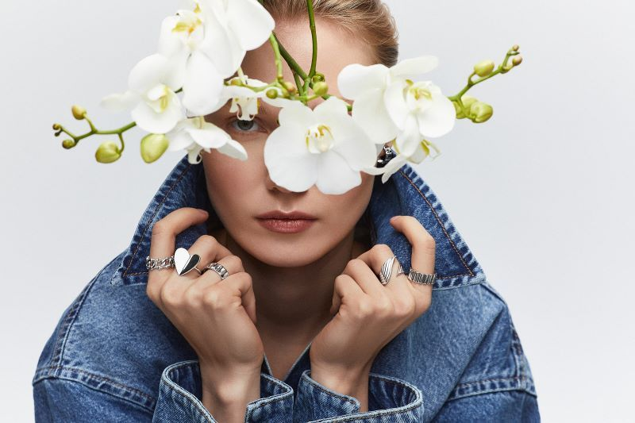
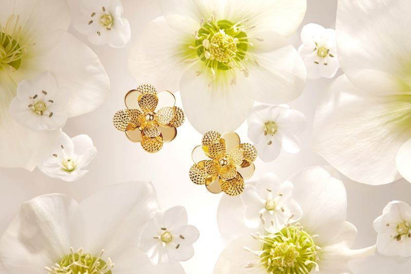
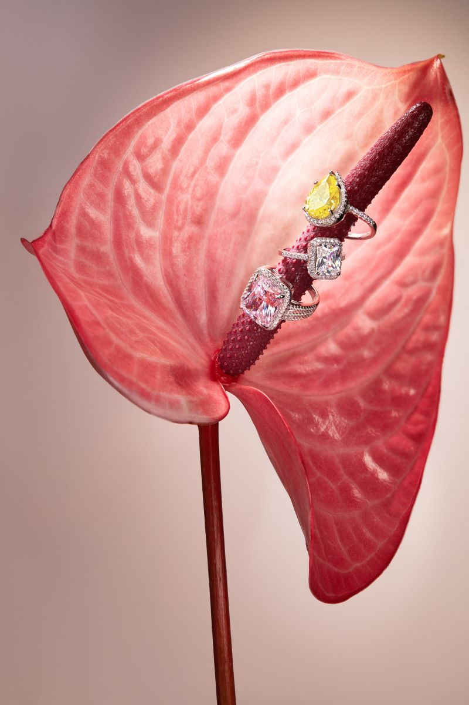

Неидеальное свидание, или как справиться с разочарованием?
Почему мы так волнуемся перед свиданием?

Почему мы так волнуемся перед свиданием? Почему иногда один вечер способен подарить ощущение полета, а другой — оставить после себя неприятный осадок, сомнения и даже удар по самооценке? Наверное, потому что свидание — это всегда нечто большее, чем просто встреча двух людей. Это ожидания. Надежды. Внутренний диалог: «А вдруг это мой человек?»
Именно поэтому разочарование после неудачного свидания воспринимается так остро. Но действительно ли плохое свидание — это провал? Или это важный этап взросления, понимания себя и своих настоящих потребностей? Давайте разберемся.
Свидание — это… Что это в жизни человека?
Свидание — это не экзамен на идеальность. И не кастинг на роль «главной любви жизни». Хотя многие, сами того не замечая, именно так к нему относятся. Мы готовимся, продумываем образ, интонации, темы разговора. Мы хотим понравиться. Хотим быть интересными, желанными, особенными. И в этом нет ничего плохого — человеку естественно стремиться к эмоциональному контакту. Но важно понять одну вещь: свидание — это прежде всего знакомство с реальностью, а не с фантазией.
До встречи мы часто влюбляемся не в человека, а в собственное представление о нем. Особенно в эпоху социальных сетей и мессенджеров, где можно неделями создавать красивую эмоциональную иллюзию. Переписка может быть блестящей, фотографии — безупречными, голос — завораживающим. Но только личная встреча показывает настоящую совместимость. Иногда уже через десять минут становится ясно: ритмы разные, юмор не совпадает, ценности расходятся, а разговор будто приходится «тащить» на себе. И это не катастрофа. Это просто информация.
Психологи часто говорят: удачное свидание — не то, после которого вы понравились человеку, а то, после которого вы лучше поняли себя. Например:
- что вам действительно важно в общении;
- как вы реагируете на холодность или навязчивость;
- умеете ли вы быть собой рядом с новым человеком;
- чего вы не готовы терпеть.
Свидание — это зеркало эмоциональной зрелости. И иногда именно неидеальные встречи помогают увидеть себя честнее всего.
Свидание-разочарование – это нормально!
А что мы обычно делаем после плохого свидания?
- Прокручиваем разговоры.
- Ищем ошибки.
- Думаем: «Наверное, я был(а) недостаточно интересен(на)…»
Или наоборот: «Как можно было так себя вести?»
Но давайте зададим себе честный вопрос: обязано ли каждое свидание заканчиваться искрой, романтикой и продолжением? Конечно, нет! Разочарование — естественная часть человеческих отношений. Более того, оно неизбежно. Потому что реальный человек всегда отличается от наших ожиданий. Иногда свидание оказывается неудачным потому, что:
- между людьми нет эмоциональной химии;
- один оказался не готов к отношениям;
- ожидания были слишком завышены;
- люди пришли на встречу в разном эмоциональном состоянии;
- произошла банальная несовместимость.
И здесь важно не делать глобальных выводов о себе. Одно неудачное свидание не означает:
- что с вами что-то не так;
- что «нормальных людей больше нет»;
- что любовь невозможна;
- что вы неинтересны или непривлекательны.
Это всего лишь одна встреча. Один опыт. Один вечер. Представьте человека, который учится водить автомобиль. Разве первая неудачная парковка означает, что он никогда не станет хорошим водителем? Конечно нет. Навык общения и построения отношений тоже формируется через опыт.
Более того, многие счастливые пары вспоминают свои первые свидания с улыбкой: кто-то опоздал, кто-то переволновался, кто-то случайно сказал глупость. И именно эта неидеальность потом становилась частью общей истории. Иногда жизнь специально разрушает красивую иллюзию быстро — чтобы не пришлось страдать годами позже. И это тоже форма заботы о нас.

Дальнейшие шаги после неудачного свидания
Что делать после разочарования? Прежде всего — не драматизировать. Очень важно не превращать одну ситуацию в жизненный приговор. Люди склонны обобщать негативный опыт:
- «Все свидания ужасны»,
- «Мне никогда не везет»,
- «Я всегда выбираю не тех».
Но зрелый взгляд выглядит иначе: «Да, это было не мое. Значит, поиск продолжается». После неудачного свидания полезно задать себе несколько вопросов:
- Что мне понравилось в своем поведении?
- Где я был(а) не собой?
- Какие качества человека оказались для меня важными?
- Какие сигналы я теперь замечаю быстрее?
- Чему меня научила эта встреча?
Так разочарование превращается в опыт, а не в эмоциональную рану. Еще один важный момент — не пытаться срочно «компенсировать» неудачу новым знакомством. Иногда человеку нужен небольшой эмоциональный выдох. Спокойствие. Возвращение к себе. При этом хорошо помогают простые вещи:
- Встреча с друзьями;
- Спорт;
- Прогулка;
- Любимая музыка;
- Работа над своими интересами и проектами.

Почему? Да потому что привлекательность человека рождается не из отчаянного поиска любви, а из внутренней наполненности жизнью. И самое главное — не переставайте верить в возможность хорошей встречи. Даже самые счастливые отношения редко начинаются идеально. Настоящая близость вообще строится не на безупречности, а на способности людей принимать несовершенство друг друга. Иногда путь к важному человеку проходит через череду странных, неловких и даже разочаровывающих свиданий. Но именно они постепенно помогают понять, кого мы действительно ищем.
И помните: неидеальное свидание — это не конец истории. Это всего лишь одна глава. Иногда оно учит нас внимательнее относиться к себе. Иногда — снижать ожидания. Иногда — ценить искренность выше красивых слов. И, возможно, главный вопрос вовсе не в том, было ли свидание удачным. А в том, стали ли вы после него чуть более честными с собой.
Скачать приложение Sunlight Знакомства & Чат на свой смартфон можно тут
Реклама. ERID: 2Vfnxwe9uKG